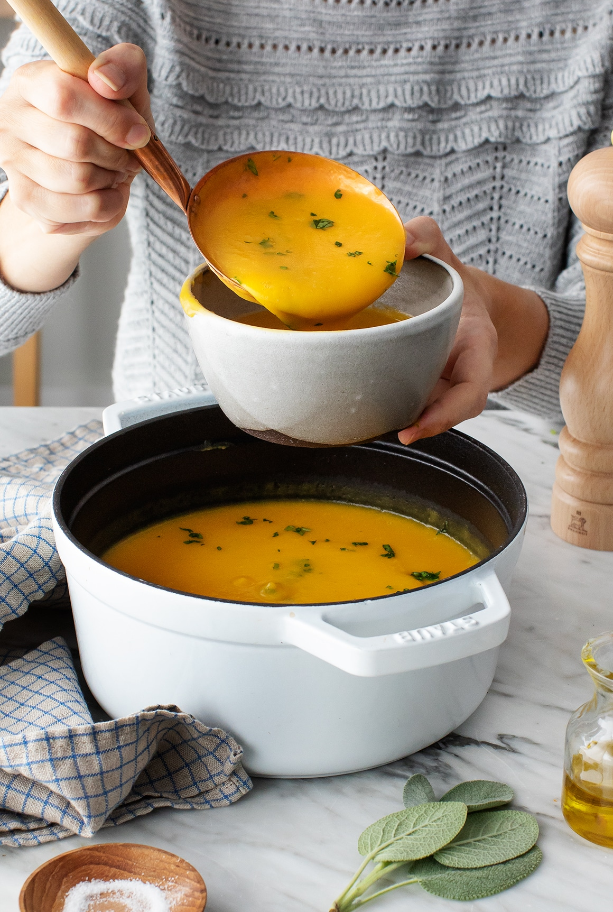
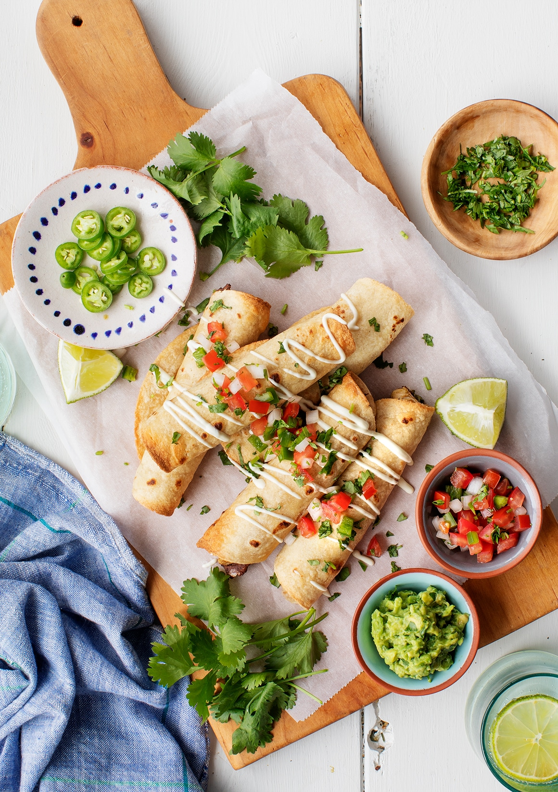
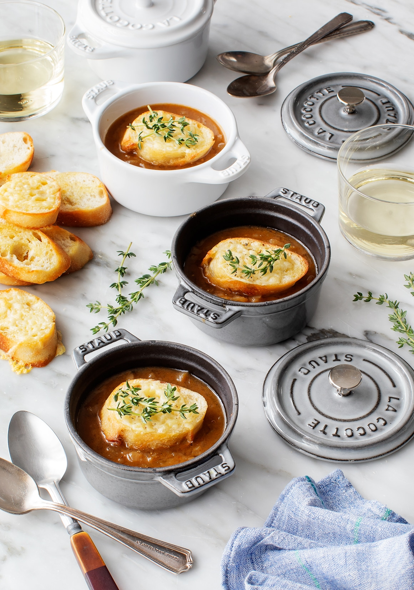

You can click Here
Trending Recipies
Spaghetti and Meatballs
 This spaghetti recipe takes inspiration from the classic combination of pasta, meatballs, and sauce,
but it has a few fresh twists. First, I replace half of the regular pasta with spiralized zucchini noodles to make it a bit lighter.
Feel free to use all pasta if you want a heartier dish, or use all zucchini noodles to lighten it up even more.
Spaghetti squash would be a great choice here too.
This spaghetti recipe takes inspiration from the classic combination of pasta, meatballs, and sauce,
but it has a few fresh twists. First, I replace half of the regular pasta with spiralized zucchini noodles to make it a bit lighter.
Feel free to use all pasta if you want a heartier dish, or use all zucchini noodles to lighten it up even more.
Spaghetti squash would be a great choice here too.
Butternut Squash Soup
This soup packs in 3 pounds of squash, so look for a medium-large one at the store or farmers market. Add them with the onion at the start of the cooking process, but make sure to taste and adjust at the end as well. That way, you’ll make a soup you really love!
Taquitos-recipe
Unlike the taquitos from down the street, these little guys are baked, not fried, and I use store bought tortillas, so making them is quick and easy. Still, they’re totally delicious.
French oinion soup
To make it, I turn to my go-to ingredients for adding meaty flavor to plant-based recipes: tamari and balsamic vinegar. As with my veggie burgers and vegan meatballs, they make this soup taste wonderfully savory and tangy.